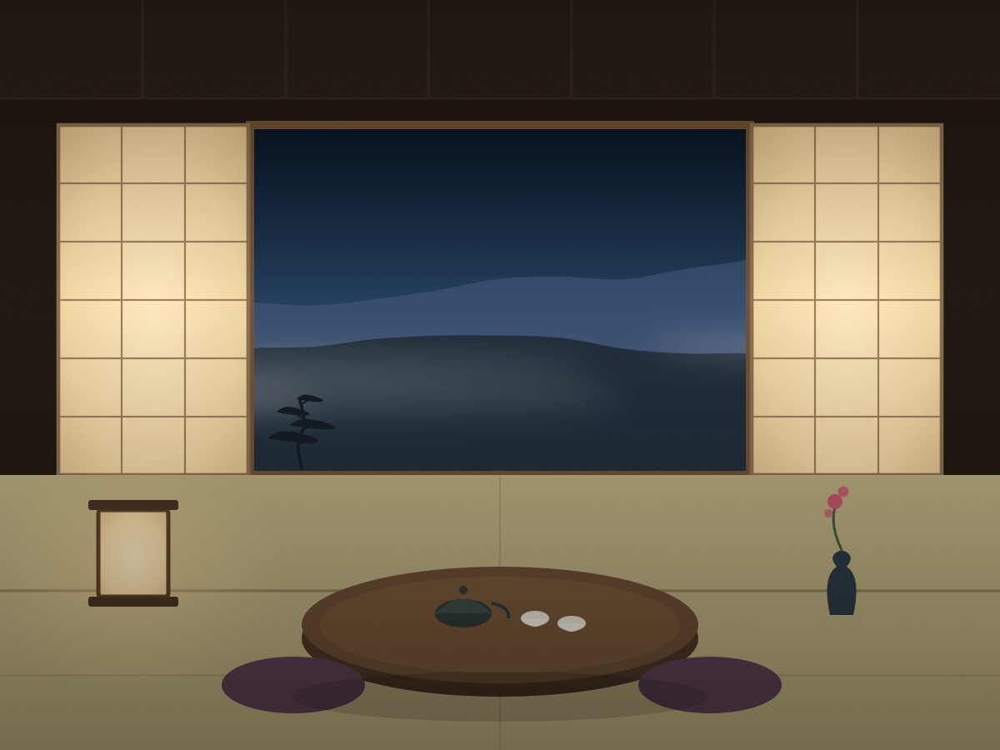
月見の間
TSUKIMI — the moon-viewing room
東の谷にまっすぐ向いた角部屋。夜半、障子を開け放つと稜線の上に月がのぼります。 広縁には一枚板の卓を据え、月を待ちながら一杯やっていただけるように。
- 間取十二畳＋広縁三畳
- 定員二名さま（三名まで可）
- 眺望東谷・稜線
- 湯大浴場・貸切風呂をご利用
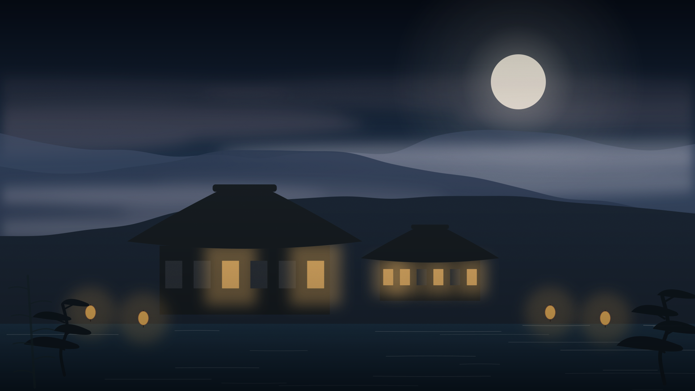
奥飛騨・平湯
全十二室の湯宿
山が暮れて、湯が鳴って、
やがて月がのぼるまで。
月待荘は、奥飛騨・平湯の谷あいにひっそりと構える、全十二室の小さな宿でございます。
館内に時計は多くございません。湯の音、囲炉裏の爆ぜる音、遠くの沢の音。
それだけを頼りに一晩を過ごしていただくのが、当荘のもてなしでございます。
どうぞ、何もしないという贅沢を、ゆっくりと味わってくださいませ。
十二室は、ひと部屋ずつ間取りも眺めも違います。 どの部屋からも山が見えるよう、障子の高さを一寸ずつ変えてしつらえました。

TSUKIMI — the moon-viewing room
東の谷にまっすぐ向いた角部屋。夜半、障子を開け放つと稜線の上に月がのぼります。 広縁には一枚板の卓を据え、月を待ちながら一杯やっていただけるように。
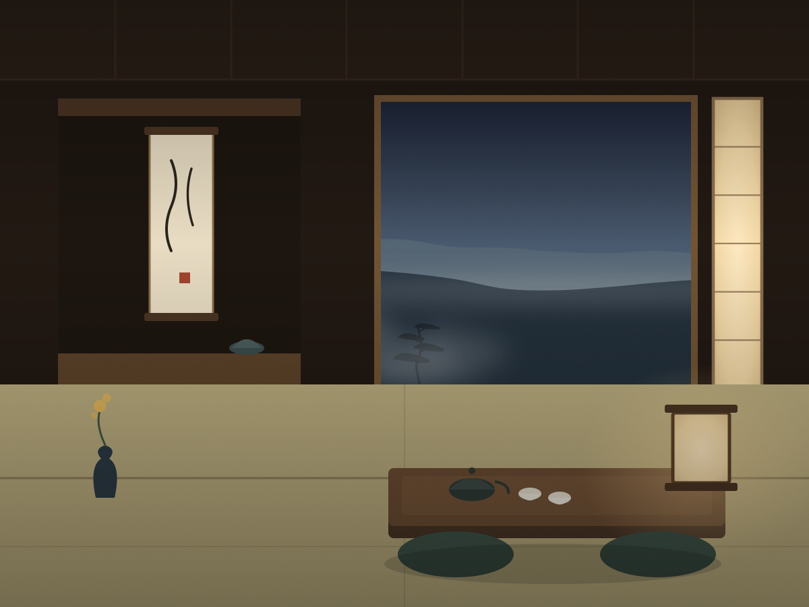
YAMAGIRI — the detached suite
母屋から渡り廊下で三十歩。源泉をそのまま引いた檜の露天風呂が付いた、二室のみの離れです。 朝、霧が谷を渡っていくのを湯船から眺められます。
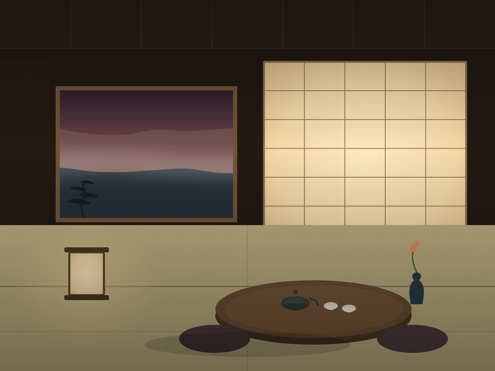
KAZEMACHI — the room of waiting winds
夕陽が長く差し込む西向きの間。畳を新しくしたばかりで、藺草の匂いがまだ残っております。 ひとり旅のお客さまに、いちばん多く選ばれる部屋です。
裏山の自家源泉から、湯船まで七十歩。加水も加温もせず、湧いたままの温度で満たしております。 湯の花が舞い、日によって色が変わるのは、生きた湯である証です。
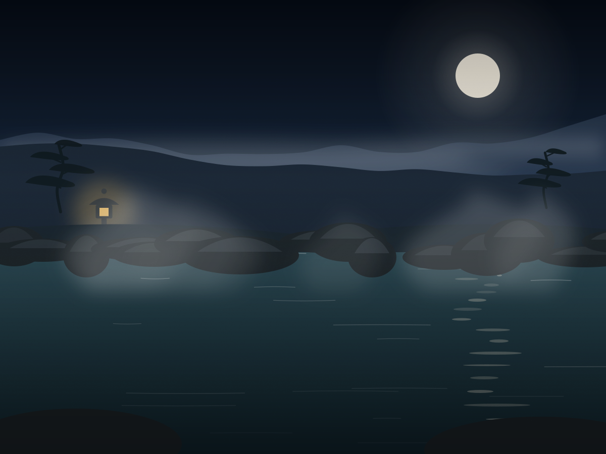
谷に張り出した岩風呂。二十三時を過ぎると灯りを二つ落とし、月あかりだけになります。 雪の晩がいちばん静かで、湯の音しか聞こえません。
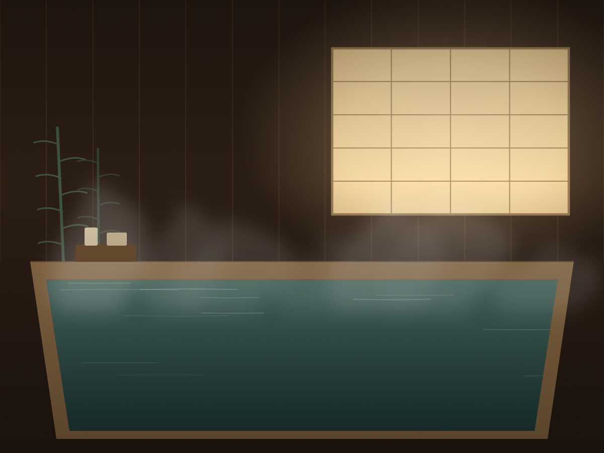
木曽檜をくり抜いた一枚風呂を、四十五分ごとに貸し切りで。 ご予約は不要、空いていれば札を裏返してお入りください。無料でご利用いただけます。
献立は、その朝に決まります。沢で獲れたもの、山で採れたもの、畑から届いたもの。 あるものでこしらえますので、同じお膳は二度と出せません。
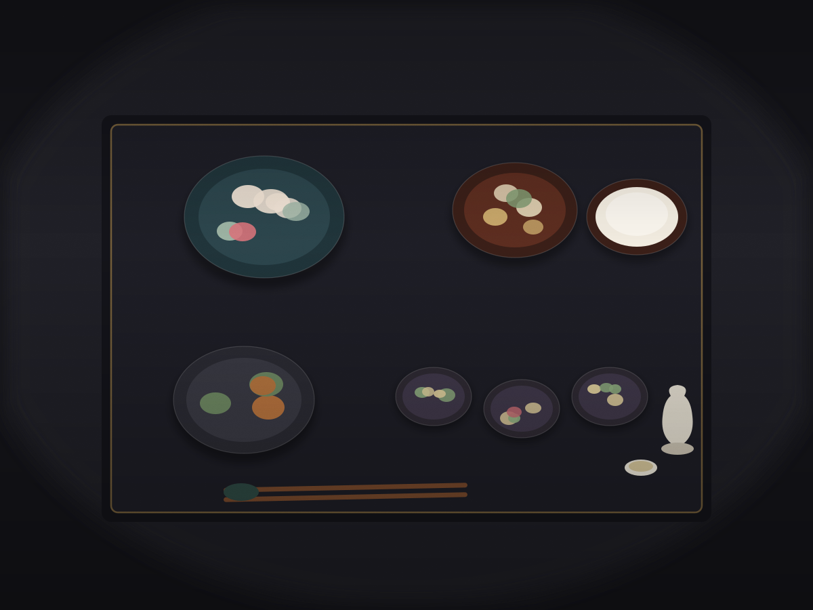
先付から水菓子まで八品ほど。岩魚の骨酒、朴葉味噌、山菜の天ぷらは通年でお出ししています。 十八時から二十時のあいだで、お好きな時刻に。お部屋食も承ります。
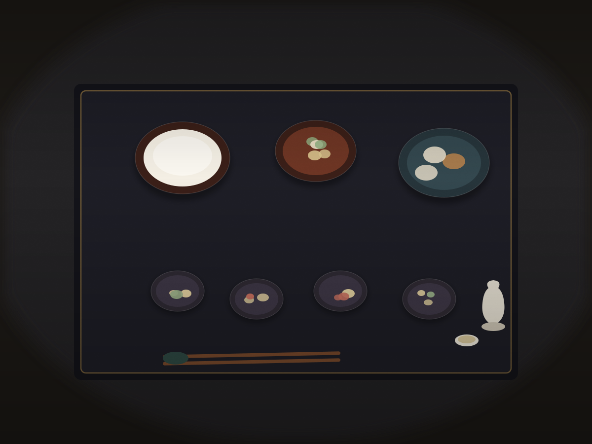
飛騨の米を土鍋で炊き、炊き上がりに合わせてお声がけします。 焼きたての飛騨牛朴葉焼き、自家製の漬物、温泉玉子を添えて。七時半から九時半まで。
お決まりの過ごし方はございません。ひとつの目安として、こんな一日をご案内しております。
囲炉裏の間で、抹茶と栃の実のお菓子を。道中のことなど伺いながら、館内をご案内します。
まだ明るいうちの露天がおすすめです。谷の色が刻々と変わっていきます。
お好きな時刻に。お酒は飛騨の蔵元三軒から、その季節のものを揃えております。
晴れた晩は、女将が縁側に火鉢を出します。甘酒をお持ちしますので、月がのぼるのをどうぞ。
露天の灯りを二つ落とします。ここからが、いちばん静かな時間です。
霧が谷を渡っていく時刻。冬は湯気で向こう岸が見えなくなります。
土鍋の飯が炊き上がる音でお呼びします。
坂の下まで、女将がお見送りいたします。バス停までの送迎も承ります。
同じ谷が、四度、まったく違う顔をいたします。
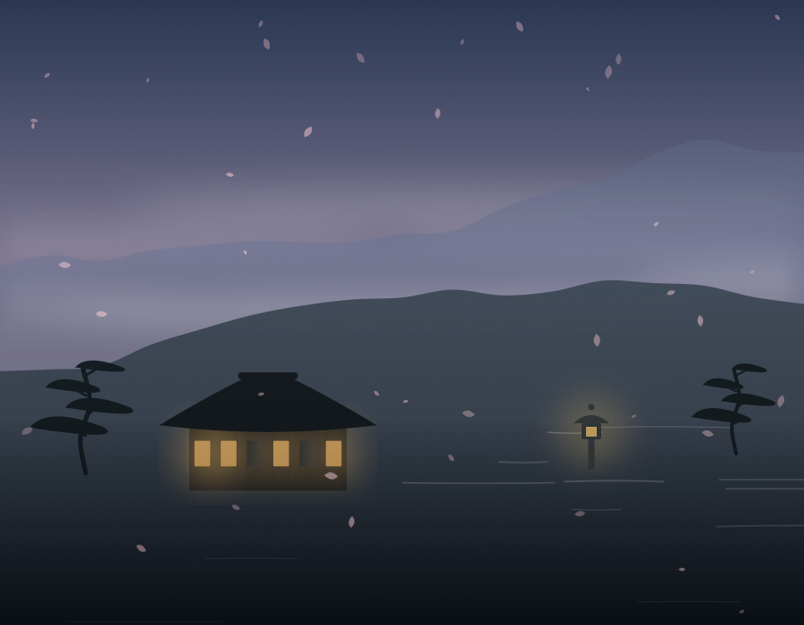
山桜は四月半ば。雪解けの沢が鳴り、山菜がいちばん旨い季節です。
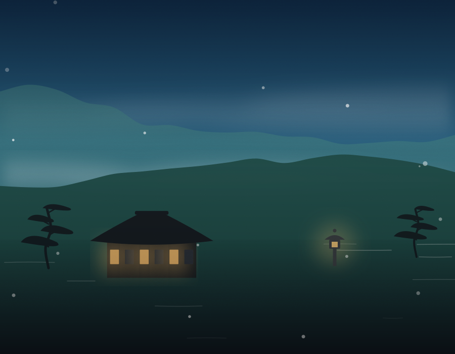
谷の底は日中でも二十四度ほど。六月下旬、沢に蛍が出ます。
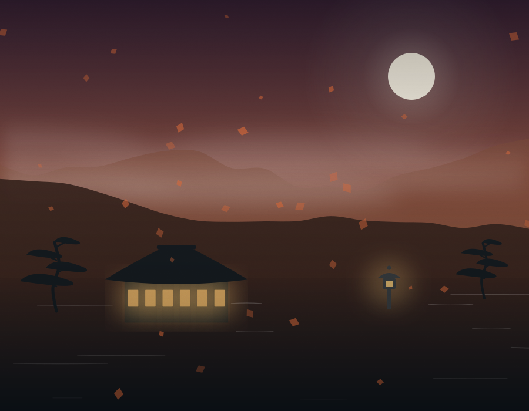
紅葉は十月下旬から。茸と川魚の膳、そして中秋の名月。
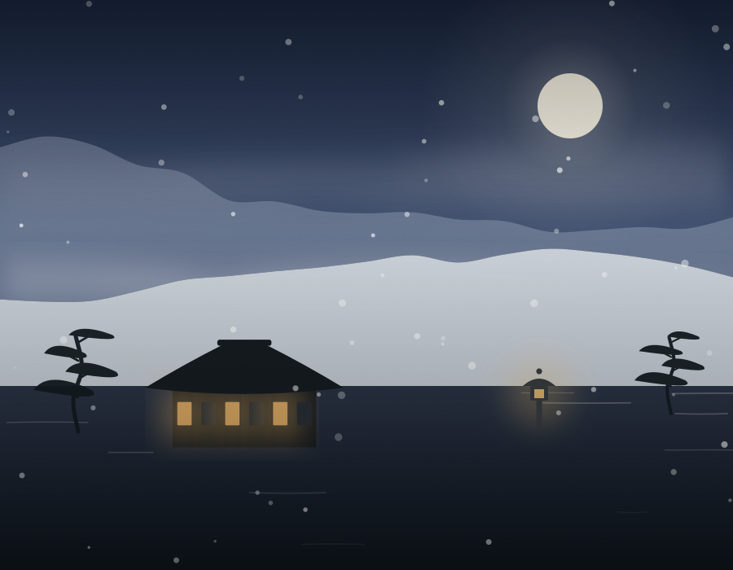
雪見の露天。一月の晴れた晩は、月あかりで雪が青く光ります。
すべて一泊二食付き、おひとりさまあたりの税・サービス料込みの料金です（入湯税別途150円）。 二名一室でご利用の場合の目安を掲げております。
ひとり旅のための一室確約プラン。夕餉は広間の隅、静かな席をご用意します。
もっとも標準のプラン。夕餉に岩魚の骨酒、月待ちの甘酒がつきます。
専用露天付きの離れ。夕餉・朝餉ともにお部屋へお運びいたします。
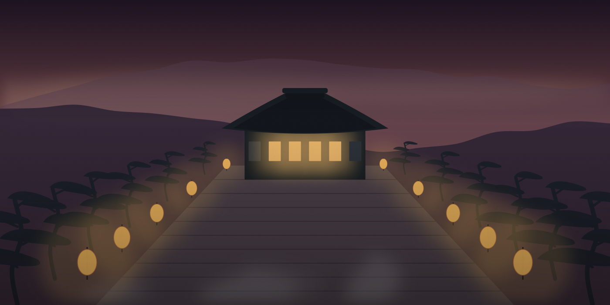